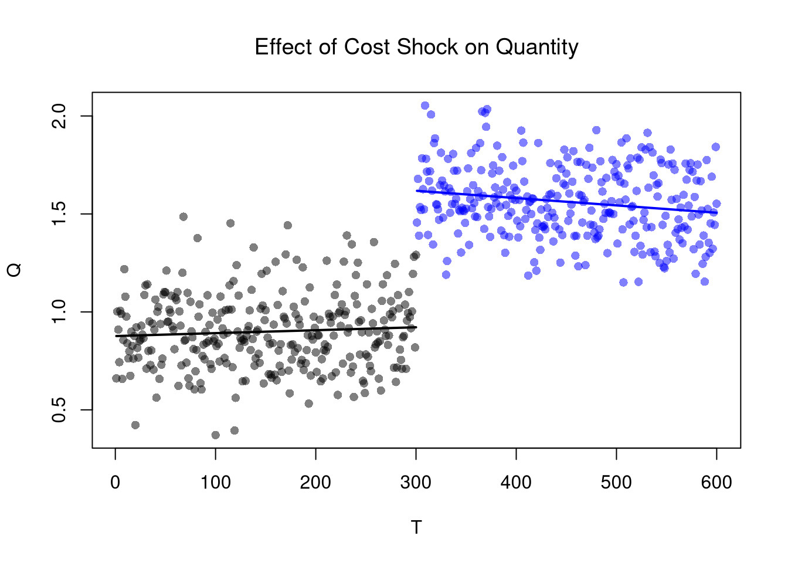
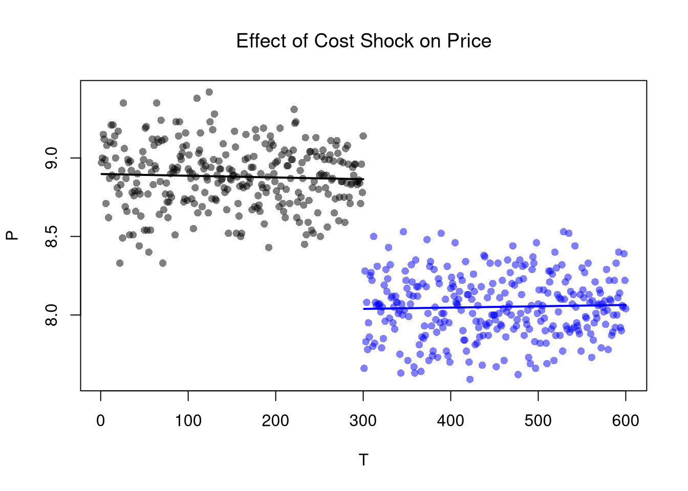
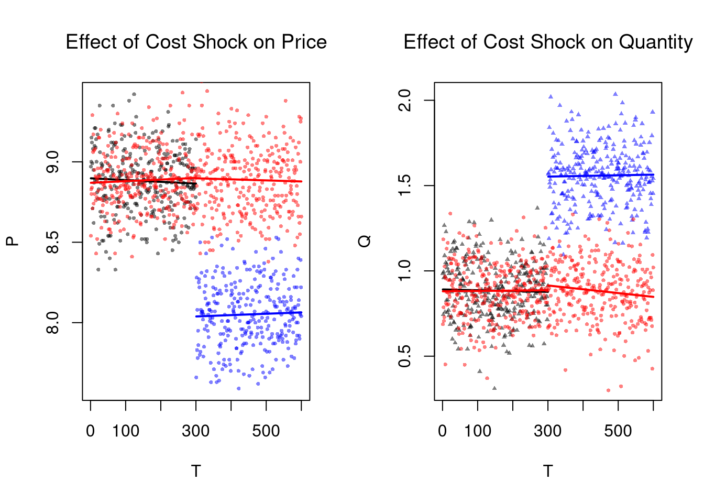
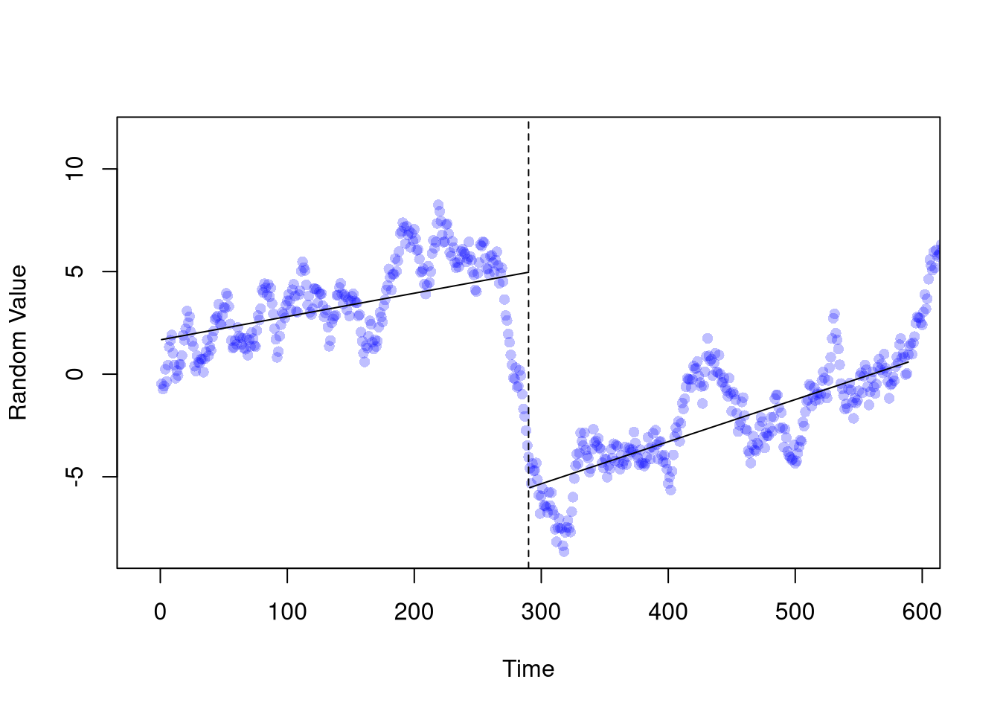
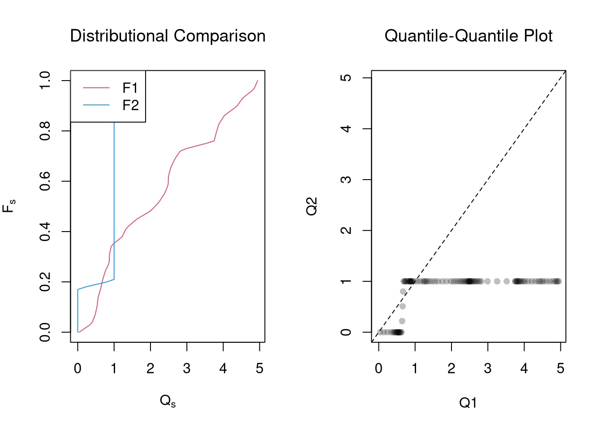

14 Data Scientism
In practice, it is hard to find a good natural experiment. For example, suppose we asked “what is the effect of wages on police demanded?” and examined a policy which lowered the educational requirements from 4 years to 2 to become an officer. This increases the labour supply, but it also affects the demand curve through “general equilibrium”: as some of the new officers were potentially criminals and, with fewer criminals, the demand for police shifts down.
In practice, it is also easy to find a bad instrument. Paradoxically, natural experiments are something you are supposed to find but never search for. As you search for good instruments, for example, sometimes random noise will appear like a good instrument (spurious instruments). In this age of big data, we are getting increasingly more data and, perhaps surprisingly, this makes it easier to make false discoveries.
We will consider three classical ways for false discoveries to arise. After that, there are examples with the latest and greatest empirical recipes—we don’t have so many theoretical results yet but I think you can understand the issue with the numerical example. Although it is difficult to express numerically, you must also know that if you search for a good natural experiment for too long, you can also be led astray from important questions. There are good reasons to be excited about empirical social science, but we would be wise to recall some earlier wisdom from economists on the matter.
The most reckless and treacherous of all theorists is he who professes to let facts and figures speak for themselves, who keeps in the background the part he has played, perhaps unconsciously, in selecting and grouping them
— Alfred Marshall, 1885
The blind transfer of the striving for quantitative measurements to a field where the specific conditions are not present which give it its basic importance in the natural sciences is the result of an entirely unfounded prejudice. It is probably responsible for the worst aberrations and absurdities produced by scientism in the social sciences. It not only leads frequently to the selection for study of the most irrelevant aspects of the phenomena because they happen to be measurable, but also to “measurements” and assignments of numerical values which are absolutely meaningless. What a distinguished philosopher recently wrote about psychology is at least equally true of the social sciences, namely that it is only too easy “to rush off to measure something without considering what it is we are measuring, or what measurement means. In this respect some recent measurements are of the same logical type as Plato’s determination that a just ruler is 729 times as happy as an unjust one.”
— F.A. Hayek, 1943
if you torture the data long enough, it will confess
— R. Coase (Source Unknown)
the definition of a causal parameter is not always clearly stated, and formal statements of identifying conditions in terms of well-specified economic models are rarely presented. Moreover, the absence of explicit structural frameworks makes it difficult to cumulate knowledge across studies conducted within this framework. Many studies produced by this research program have a `stand alone’ feature and neither inform nor are influenced by the general body of empirical knowledge in economics.
— J.J. Heckman, 2000
without explicit prior consideration of the effect of the instrument choice on the parameter being estimated, such a procedure is effectively the opposite of standard statistical practice in which a parameter of interest is defined first, followed by an estimator that delivers that parameter. Instead, we have a procedure in which the choice of the instrument, which is guided by criteria designed for a situation in which there is no heterogeneity, is implicitly allowed to determine the parameter of interest. This goes beyond the old story of looking for an object where the light is strong enough to see; rather, we have at least some control over the light but choose to let it fall where it may and then proclaim that whatever it illuminates is what we were looking for all along.
— A. Deaton, 2010
14.1 Data Errors
A huge amount of data normally means a huge amount of data cleaning/merging/aggregating. This avoids many copy-paste errors, which are a recipe for disaster, but may also introduce other types of errors. Some spurious results are driven by honest errors in data cleaning. According to one estimate, this is responsible for around one fifth of all medical science retractions (there is even a whole book about this!). Although there are not similar meta-analysis in economics, there are some high-profile examples. This includes papers that are highly influential, like Lott, Levitt and Reinhart and Rogoff as well as others the top economics journals, like the RESTUD and AER. There are some reasons to think such errors are more widespread across the social sciences; e.g., in Census data and Aid data. So be careful!
Note: one reason to plot your data is to help spot such errors.
14.2 P-Hacking
Another class of errors pertains to P-hacking (and it’s various synonyms: data drudging, star mining,….). While there are cases of fraudulent data manipulation (which can be considered as a dishonest data error), P-hacking is a much more pernicious and widespread
set.seed(123)
n <- 50
X1 <- runif(n)
# Regression Machine:
# repeatedly finds covariate, runs regression
# stops when statistically significant at .1%
p <- 1
i <- 0
while(p >= .001){
# Get Random Covariate
X2 <- runif(n)
# Merge and `Analyze'
dat_i <- data.frame(X1,X2)
reg_i <- lm(X1~X2, data=dat_i)
# update results in global environment
p <- summary(reg_i)$coefficients[2,4]
i <- i+1
}
plot(X1~X2, data=dat_i,
pch=16, col=grey(0,.5), font.main=1,
main=paste0('Random Dataset ', i,": p=",
formatC(p,digits=2, format='fg')))
abline(reg_i)
# P-hacking 2SLS
library(fixest)
p <- 1
ii <- 0
set.seed(123)
while(p >= .05){
# Get Random Covariates
X2 <- runif(n)
X3 <- runif(n)
# Create Treatment Variable based on Cutoff
cutoffs <- seq(0,1,length.out=11)[-c(1,11)]
for(tau in cutoffs){
T3 <- 1*(X3 > tau)
# Merge and `Analyze'
dat_i <- data.frame(X1,X2,T3)
ivreg_i <- feols(X1~1|X2~T3, data=dat_i)
# Update results in global environment
ptab <- summary(ivreg_i)$coeftable
if( nrow(ptab)==2){
p <- ptab[2,4]
ii <- ii+1
}
}
}
summary(ivreg_i)## TSLS estimation - Dep. Var.: X1
## Endo. : X2
## Instr. : T3
## Second stage: Dep. Var.: X1
## Observations: 50
## Standard-errors: IID
## Estimate Std. Error t value Pr(>|t|)
## (Intercept) -9.95e-14 1.28e-13 -7.750700e-01 0.4421
## fit_X2 1.00e+00 2.46e-13 4.060978e+12 < 2.2e-16 ***
## ---
## Signif. codes: 0 '***' 0.001 '**' 0.01 '*' 0.05 '.' 0.1 ' ' 1
## RMSE: 5.81e-14 Adj. R2: 1
## F-test (1st stage), X2: stat = 0.664884, p = 0.418869, on 1 and 48 DoF.
## Wu-Hausman: stat = 0.232185, p = 0.632145, on 1 and 47 DoF.14.3 Spurious Regression
Even without any coding errors or p-hacking, you can sometimes make a false discovery. We begin with a motivating empirical example of “US Gov’t Spending on Science”.
First, get and inspect some data from https://tylervigen.com/spurious-correlations
# Your data is not made up in the computer (hopefully!)
vigen_csv <- read.csv( paste0(
'https://raw.githubusercontent.com/the-mad-statter/',
'whysospurious/master/data-raw/tylervigen.csv') )
class(vigen_csv)## [1] "data.frame"## [1] "year" "science_spending"
## [3] "hanging_suicides" "pool_fall_drownings"
## [5] "cage_films" "cheese_percap"
## [7] "bed_deaths" "maine_divorce_rate"
## [9] "margarine_percap" "miss_usa_age"
## [11] "steam_murders" "arcade_revenue"
## [13] "computer_science_doctorates" "noncom_space_launches"
## [15] "sociology_doctorates" "mozzarella_percap"
## [17] "civil_engineering_doctorates" "fishing_drownings"
## [19] "kentucky_marriage_rate" "oil_imports_norway"
## [21] "chicken_percap" "train_collision_deaths"
## [23] "oil_imports_total" "pool_drownings"
## [25] "nuclear_power" "japanese_cars_sold"
## [27] "motor_vehicle_suicides" "spelling_bee_word_length"
## [29] "spider_deaths" "math_doctorates"
## [31] "uranium"## year science_spending hanging_suicides pool_fall_drownings cage_films
## 1 1996 NA NA NA NA
## 2 1997 NA NA NA NA
## 3 1998 NA NA NA NA
## 4 1999 18079 5427 109 2
## 5 2000 18594 5688 102 2## $year
## [1] "integer"
##
## $science_spending
## [1] "integer"
##
## $hanging_suicides
## [1] "integer"
##
## $pool_fall_drownings
## [1] "integer"
##
## $cage_films
## [1] "integer"## year science_spending hanging_suicides pool_fall_drownings
## "integer" "integer" "integer" "integer"
## cage_films
## "integer"The US government spending on science is ruining cinema (p<.001)!?
# Drop Data before 1999
vigen_csv <- vigen_csv[vigen_csv$year >= 1999,]
# Run OLS Regression
reg1 <- lm(cage_films ~ -1 + science_spending, data=vigen_csv)
summary(reg1)##
## Call:
## lm(formula = cage_films ~ -1 + science_spending, data = vigen_csv)
##
## Residuals:
## Min 1Q Median 3Q Max
## -1.7670 -0.7165 0.1447 0.7890 1.4531
##
## Coefficients:
## Estimate Std. Error t value Pr(>|t|)
## science_spending 9.978e-05 1.350e-05 7.39 2.34e-05 ***
## ---
## Signif. codes: 0 '***' 0.001 '**' 0.01 '*' 0.05 '.' 0.1 ' ' 1
##
## Residual standard error: 1.033 on 10 degrees of freedom
## (1 observation deleted due to missingness)
## Multiple R-squared: 0.8452, Adjusted R-squared: 0.8297
## F-statistic: 54.61 on 1 and 10 DF, p-value: 2.343e-05It’s not all bad, people in maine stay married longer?
plot.new()
plot.window(xlim=c(1999, 2009), ylim=c(7,9))
lines(log(maine_divorce_rate*1000)~year, data=vigen_csv)
lines(log(science_spending/10)~year, data=vigen_csv, lty=2)
axis(1)
axis(2)
legend('topright', lty=c(1,2), legend=c(
'log(maine_divorce_rate*1000)',
'log(science_spending/10)'))
Some other great examples
par(mfrow=c(1,2), mar=c(2,2,2,1))
plot.new()
plot.window(xlim=c(1999, 2009), ylim=c(5,9)*1000)
lines(science_spending/3~year, data=vigen_csv, lty=1, col=2, pch=16)
text(2003, 8200, 'US spending on science, space, technology (USD/3)', col=2, cex=.6, srt=30)
lines(hanging_suicides~year, data=vigen_csv, lty=1, col=4, pch=16)
text(2004, 6500, 'US Suicides by hanging, strangulation, suffocation (Deaths)', col=4, cex=.6, srt=30)
axis(1)
axis(2)
plot.new()
plot.window(xlim=c(2002, 2009), ylim=c(0,5))
lines(cage_films~year, data=vigen_csv[vigen_csv$year>=2002,], lty=1, col=2, pch=16)
text(2006, 0.5, 'Number of films with Nicolas Cage (Films)', col=2, cex=.6, srt=0)
lines(pool_fall_drownings/25~year, data=vigen_csv[vigen_csv$year>=2002,], lty=1, col=4, pch=16)
text(2006, 4.5, 'Number of drownings by falling into pool (US Deaths/25)', col=4, cex=.6, srt=0)
axis(1)
axis(2)
# Include an intercept to regression 1
#reg2 <- lm(cage_films ~ science_spending, data=vigen_csv)
#suppressMessages(library(stargazer))
#stargazer(reg1, reg2, type='html')The same principles apply to regression-based approaches to endogeneity issues. For example, we now run IV regressions for different variable combinations in the dataset of spurious relationships
knames <- names(vigen_csv)[2:11] # First 10 Variables
#knames <- names(vigen_csv)[-1] # Try All Variables
p <- 1
ii <- 1
ivreg_list <- vector("list", factorial(length(knames))/factorial(length(knames)-3))
# Choose 3 variable
for( k1 in knames){
for( k2 in setdiff(knames,k1)){
for( k3 in setdiff(knames,c(k1,k2)) ){
X1 <- vigen_csv[,k1]
X2 <- vigen_csv[,k2]
X3 <- vigen_csv[,k3]
# Merge and `Analyze'
dat_i <- na.omit(data.frame(X1,X2,X3))
ivreg_i <- feols(X1~1|X2~X3, data=dat_i)
ivreg_list[[ii]] <- list(ivreg_i, c(k1,k2,k3))
ii <- ii+1
}}}
pvals <- sapply(ivreg_list, function(ivreg_i){ivreg_i[[1]]$coeftable[2,4]})
plot(ecdf(pvals), xlab='p-value', ylab='CDF', font.main=1,
main='Frequency IV is Statistically Significant')
abline(v=c(.01,.05), col=c(2,4))
# Most Significant Spurious Combinations
pvars <- sapply(ivreg_list, function(ivreg_i){ivreg_i[[2]]})
pdat <- data.frame(t(pvars), pvals)
pdat <- pdat[order(pdat$pvals),]
head(pdat)## X1 X2 X3 pvals
## 4 science_spending hanging_suicides bed_deaths 3.049883e-08
## 76 hanging_suicides science_spending bed_deaths 3.049883e-08
## 3 science_spending hanging_suicides cheese_percap 3.344890e-08
## 75 hanging_suicides science_spending cheese_percap 3.344890e-08
## 485 maine_divorce_rate margarine_percap cheese_percap 3.997738e-08
## 557 margarine_percap maine_divorce_rate cheese_percap 3.997738e-08For more intuition on spurious correlations, try http://shiny.calpoly.sh/Corr_Reg_Game/
14.4 Spurious Causal Impacts
In practice, it is hard to find a good natural experiment. For example, suppose we asked “what is the effect of wages on police demanded?” and examined a policy which lowered the educational requirements from 4 years to 2 to become an officer. This increases the labour supply, but it also affects the demand curve through “general equilibrium”: as some of the new officers were potentially criminals. With fewer criminals, the demand for likely police shifts down.
In practice, it is surprisingly easy to find a bad instrument. Paradoxically, natural experiments are something you are supposed to find but never search for. As you search for good instruments, for example, sometimes random noise will appear like a good instrument (Spurious instruments). Worse, if you search for a good instrument for too long, you can also be led astray from important questions.
We apply the three major credible methods (IV, RDD, DID) to random walks. Each time, we find a result that fits mold and add various extensions that make it appear robust. One could tell a story about how \(X_{2}\) affects \(X_{1}\) but \(X_{1}\) might also affect \(X_{2}\), and how they discovered an instrument \(X_{3}\) to provide the first causal estimate of \(X_{2}\) on \(X_{1}\). The analysis looks scientific and the story sounds plausible, so you could probably be convinced if it were not just random noise.
n <- 1000
n_index <- seq(n)
set.seed(1)
random_walk1 <- cumsum(runif(n,-1,1))
set.seed(2)
random_walk2 <- cumsum(runif(n,-1,1))
par(mfrow=c(1,2))
plot(random_walk1, pch=16, col=rgb(1,0,0,.25),
xlab='Time', ylab='Random Value')
plot(random_walk2, pch=16, col=rgb(0,0,1,.25),
xlab='Time', ylab='Random Value')
IV. First, find an instrument that satisfy various statistical criterion to provide a causal estimate of \(X_{2}\) on \(X_{1}\).
# "Find" "valid" ingredients
library(fixest)
random_walk3 <- cumsum(runif(n,-1,1))
dat_i <- data.frame(
X1=random_walk1,
X2=random_walk2,
X3=random_walk3)
ivreg_i <- feols(X1~1|X2~X3, data=dat_i)
summary(ivreg_i)## TSLS estimation - Dep. Var.: X1
## Endo. : X2
## Instr. : X3
## Second stage: Dep. Var.: X1
## Observations: 1,000
## Standard-errors: IID
## Estimate Std. Error t value Pr(>|t|)
## (Intercept) 8.53309 1.644285 5.18954 2.5533e-07 ***
## fit_X2 1.79901 0.472285 3.80916 1.4796e-04 ***
## ---
## Signif. codes: 0 '***' 0.001 '**' 0.01 '*' 0.05 '.' 0.1 ' ' 1
## RMSE: 6.25733 Adj. R2: -1.29152
## F-test (1st stage), X2: stat = 10.8, p = 0.001048, on 1 and 998 DoF.
## Wu-Hausman: stat = 23.4, p = 1.518e-6, on 1 and 997 DoF.RDD. Second, find a large discrete change in the data that you can associate with a policy. You can use this as an instrument too, also providing a causal estimate of \(X_{2}\) on \(X_{1}\).
# Let the data take shape
# (around the large differences before and after)
n1 <- 290
wind1 <- c(n1-300,n1+300)
dat1 <- data.frame(t=n_index, y=random_walk1, d=1*(n_index > n1))
dat1_sub <- dat1[ n_index>wind1[1] & n_index < wind1[2],]
# Then find your big break
reg0 <- lm(y~t, data=dat1_sub[dat1_sub$d==0,])
reg1 <- lm(y~t, data=dat1_sub[dat1_sub$d==1,])
# The evidence should show openly (it's just science)
plot(random_walk1, pch=16, col=rgb(0,0,1,.25),
xlim=wind1, xlab='Time', ylab='Random Value')
abline(v=n1, lty=2)
lines(reg0$model$t, reg0$fitted.values, col=1)
lines(reg1$model$t, reg1$fitted.values, col=1)
# Dress with some statistics for added credibility
rdd_sub <- lm(y~d+t+d*t, data=dat1_sub)
rdd_full <- lm(y~d+t+d*t, data=dat1)
stargazer::stargazer(rdd_sub, rdd_full,
type='html',
title='Recipe RDD',
header=F,
omit=c('Constant'),
notes=c('First column uses a dataset around the discontinuity.',
'Smaller windows are more causal, and where the effect is bigger.'))| Dependent variable: | ||
| y | ||
| (1) | (2) | |
| d | -13.169*** | -9.639*** |
| (0.569) | (0.527) | |
| t | 0.011*** | 0.011*** |
| (0.001) | (0.002) | |
| d:t | 0.009*** | 0.004* |
| (0.002) | (0.002) | |
| Observations | 589 | 1,000 |
| R2 | 0.771 | 0.447 |
| Adjusted R2 | 0.770 | 0.446 |
| Residual Std. Error | 1.764 (df = 585) | 3.081 (df = 996) |
| F Statistic | 658.281*** (df = 3; 585) | 268.763*** (df = 3; 996) |
| Note: | p<0.1; p<0.05; p<0.01 | |
| First column uses a dataset around the discontinuity. | ||
| Smaller windows are more causal, and where the effect is bigger. | ||
DID. Third, find a change in the data that you can associate with a policy where the control group has parallel trends. This also provides a causal estimate of \(X_{2}\) on \(X_{1}\).
# Find a reversal of fortune
# (A good story always goes well with a nice pre-trend)
n2 <- 318
wind2 <- c(n2-20,n2+20)
plot(random_walk2, pch=16, col=rgb(0,0,1,.5),
xlim=wind2, ylim=c(-15,15), xlab='Time', ylab='Random Value')
points(random_walk1, pch=16, col=rgb(1,0,0,.5))
abline(v=n2, lty=2)
# Knead out any effects that are non-causal (aka correlation)
dat2A <- data.frame(t=n_index, y=random_walk1, d=1*(n_index > n2), RWid=1)
dat2B <- data.frame(t=n_index, y=random_walk2, d=0, RWid=2)
dat2 <- rbind(dat2A, dat2B)
dat2$RWid <- as.factor(dat2$RWid)
dat2$tid <- as.factor(dat2$t)
dat2_sub <- dat2[ dat2$t>wind2[1] & dat2$t < wind2[2],]
# Report the stars for all to enjoy
# (what about the intercept?)
# (stable coefficients are the good ones?)
did_fe1 <- lm(y~d+tid, data=dat2_sub)
did_fe2 <- lm(y~d+RWid, data=dat2_sub)
did_fe3 <- lm(y~d*RWid+tid, data=dat2_sub)
stargazer::stargazer(did_fe1, did_fe2, did_fe3,
type='html',
title='Recipe DID',
header=F,
omit=c('tid','RWid', 'Constant'),
notes=c(
'Fixed effects for time in column 1, for id in column 2, and both in column 3.',
'Fixed effects control for most of your concerns.',
'Anything else creates a bias in the opposite direction.'))| Dependent variable: | |||
| y | |||
| (1) | (2) | (3) | |
| d | 1.804* | 1.847*** | 5.851*** |
| (0.892) | (0.652) | (0.828) | |
| Observations | 78 | 78 | 78 |
| R2 | 0.227 | 0.164 | 0.668 |
| Adjusted R2 | -0.566 | 0.142 | 0.309 |
| Residual Std. Error | 2.750 (df = 38) | 2.035 (df = 75) | 1.827 (df = 37) |
| F Statistic | 0.287 (df = 39; 38) | 7.379*** (df = 2; 75) | 1.860** (df = 40; 37) |
| Note: | p<0.1; p<0.05; p<0.01 | ||
| Fixed effects for time in column 1, for id in column 2, and both in column 3. | |||
| Fixed effects control for most of your concerns. | |||
| Anything else creates a bias in the opposite direction. | |||